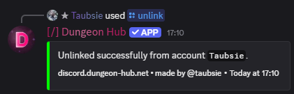

/unlink
Description
Removes the link to your Minecraft account and updates your roles/nickname accordingly.
Examples
Unlink
/unlink

See Also
/link: link your account again.
/sync and /force-sync ✏️: refresh roles after unlinking.
Verification ✏️: the verification feature is described closer here.
27 December 2025